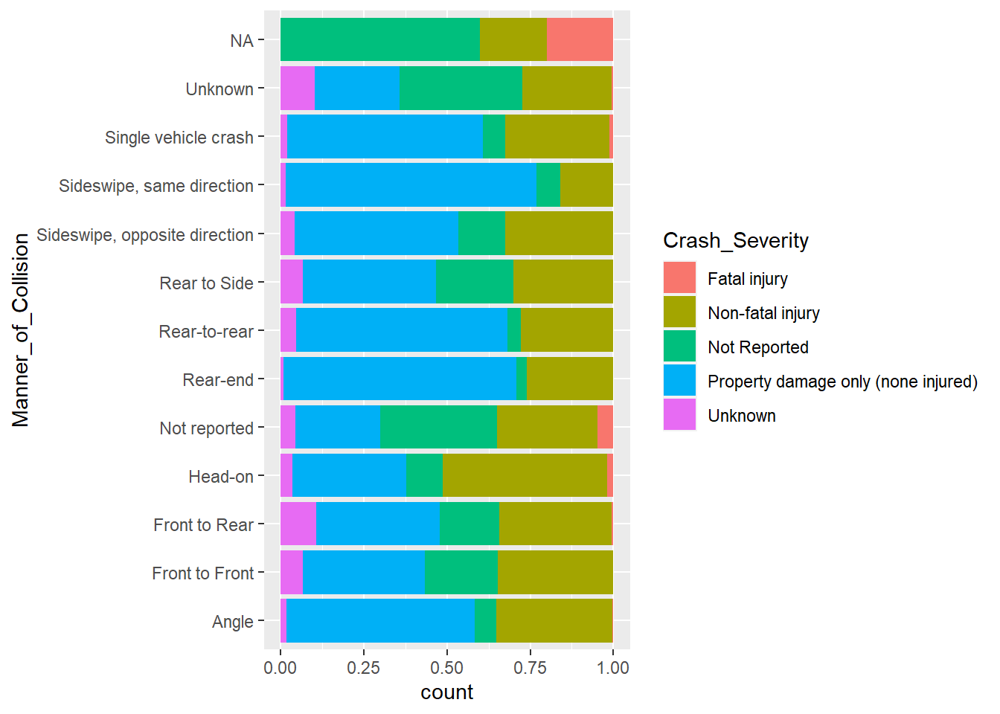

library(tidyverse)
library(summarytools)
library(lubridate)
library(ggplot2)
library(dplyr)
library(treemap)
library(hrbrthemes)
knitr::opts_chunk$set(echo = TRUE, warning=FALSE, message=FALSE)Final Project Assignment#1: Sue-Ellen Duffy
final_Project_assignment_1
final_project_data_description
Project & Data Description
Part 1. Introduction
- Data Introduction
The dataset was retrieved from the Massachusetts Department of Transportation data extraction service. I requested publicly available crash data for Boston municipality for the specific years of 2012-2022 and received a CSV file.
This dataset is about individual crashes in Boston from 2012-2022 and are represented by each row in the dataset. The dataset includes crash information including date, time, weather and lighting conditions and the severity of each crash. In regards to location, the dataset includes the travel direction of the vehicles, proximity to certain landmarks such as an exit or roadway intersection and the coordinates (latitude and longitude) of the crash point.
Post-pandemic car ownership and commuting by car has increased in an astonishing way - not to help the matter, train commutes are slower than ever. This dataset cannot delve deep enough to understand the scope of this issue and traffic data is not publicly available. This dataset will at least allow me to analyze city crashes that may yield some understanding about the implications of an increase in car commuting to the city.
- Questions
I want to know if there are any correlations to time of day, date, or weather conditions that implicate a higher severity of crash and or a higher prevalence of crash.
I also want to know if these dates or times of day that are associated with higher prevalence of crash have any relationship with holidays, weekends, or sunset/sunrises.
An additional question is whether there are certain areas that contain higher crash points in the city. Do crashes happen more so on the highways between popular destinations or do they for instance happen on city streets where many drivers are searching for places to park.
As a final question - post-pandemic are incidents of crashes going up in the city?
Part 2. Describe the data set(s)
crashdata <- read_csv("~/SDR/Final Project Practice/CrashDetails_rbbrg0rxx3ftzd04fsspf50a.csv",
skip = 2)
View(crashdata)dim(crashdata)[1] 45980 25length(unique(crashdata))[1] 25head(crashdata)str(crashdata)spc_tbl_ [45,980 × 25] (S3: spec_tbl_df/tbl_df/tbl/data.frame)
$ Crash_Number : num [1:45980] 2858373 2855641 2964895 2956331 2842066 ...
$ City_Town_Name : chr [1:45980] "BOSTON" "BOSTON" "BOSTON" "BOSTON" ...
$ Crash_Date : chr [1:45980] "01-Jan-2012" "01-Jan-2012" "01-Jan-2012" "01-Jan-2012" ...
$ Crash_Time : 'hms' num [1:45980] 00:03:00 01:31:00 01:54:00 02:00:00 ...
..- attr(*, "units")= chr "secs"
$ Crash_Severity : chr [1:45980] "Property damage only (none injured)" "Property damage only (none injured)" "Property damage only (none injured)" "Non-fatal injury" ...
$ Maximum_Injury_Severity_Reported : chr [1:45980] "No injury" "No injury" "No injury" "Non-fatal injury - Non-incapacitating" ...
$ Number_of_Vehicles : num [1:45980] 1 2 2 2 1 1 1 2 2 1 ...
$ Total_Nonfatal_Injuries : num [1:45980] 0 0 0 1 0 1 0 0 0 1 ...
$ Total_Fatal_Injuries : num [1:45980] 0 0 0 0 0 0 0 0 0 0 ...
$ Manner_of_Collision : chr [1:45980] "Single vehicle crash" "Sideswipe, same direction" "Rear-end" "Angle" ...
$ Vehicle_Action_Prior_to_Crash : chr [1:45980] "V1: Travelling straight ahead" "V1: Travelling straight ahead / V2: Changing lanes" "V1: Turning right / V2: Travelling straight ahead" "V1: Travelling straight ahead / V2: Turning left" ...
$ Vehicle_Travel_Directions : chr [1:45980] "V1: W" "V1: N / V2: N" "V1: N / V2: S" "V1: S / V2: S" ...
$ Most_Harmful_Events : chr [1:45980] "V1:(Collision with curb)" "V1:(Collision with motor vehicle in traffic) / V2:(Collision with motor vehicle in traffic)" "V1:(Collision with motor vehicle in traffic) / V2:(Unknown)" "V1:(Collision with motor vehicle in traffic) / V2:(Collision with motor vehicle in traffic)" ...
$ Vehicle_Configuration : chr [1:45980] "V1:(Passenger car)" "V1:(Passenger car) / V2:(Passenger car)" "V1:(Passenger car) / V2:(Passenger car)" "V1:(Passenger car) / V2:(Passenger car)" ...
$ Road_Surface_Condition : chr [1:45980] "Dry" "Dry" "Dry" "Dry" ...
$ Ambient_Light : chr [1:45980] "Dark - roadway not lighted" "Dark - lighted roadway" "Daylight" "Dark - lighted roadway" ...
$ Weather_Condition : chr [1:45980] "Not Reported" "Clear" "Clear/Clear" "Cloudy/Cloudy" ...
$ At_Roadway_Intersection : chr [1:45980] NA NA "INTERVALE STREET / BLUE HILL AVENUE" NA ...
$ Distance_From_Nearest_Roadway_Intersection: chr [1:45980] "MORTON STREET / CANTERBURY STREET" "LEVERETT CONNECTOR NORTH / INTERSTATE 93 Rte 93 N" "INTERVALE STREET / BLUE HILL AVENUE" "MASSACHUSETTS AVENUE / THEODORE GLYNN WAY" ...
$ Distance_From_Nearest_Milemarker : chr [1:45980] NA NA NA NA ...
$ Distance_From_Nearest_Exit : chr [1:45980] NA NA NA NA ...
$ Distance_From_Nearest_Landmark : chr [1:45980] NA NA NA NA ...
$ Non_Motorist_Type : chr [1:45980] NA NA NA NA ...
$ X_Cooordinate : num [1:45980] 233302 234816 234564 235439 NA ...
$ Y_Cooordinate : num [1:45980] 893678 903323 895797 897873 NA ...
- attr(*, "spec")=
.. cols(
.. Crash_Number = col_double(),
.. City_Town_Name = col_character(),
.. Crash_Date = col_character(),
.. Crash_Time = col_time(format = ""),
.. Crash_Severity = col_character(),
.. Maximum_Injury_Severity_Reported = col_character(),
.. Number_of_Vehicles = col_double(),
.. Total_Nonfatal_Injuries = col_double(),
.. Total_Fatal_Injuries = col_double(),
.. Manner_of_Collision = col_character(),
.. Vehicle_Action_Prior_to_Crash = col_character(),
.. Vehicle_Travel_Directions = col_character(),
.. Most_Harmful_Events = col_character(),
.. Vehicle_Configuration = col_character(),
.. Road_Surface_Condition = col_character(),
.. Ambient_Light = col_character(),
.. Weather_Condition = col_character(),
.. At_Roadway_Intersection = col_character(),
.. Distance_From_Nearest_Roadway_Intersection = col_character(),
.. Distance_From_Nearest_Milemarker = col_character(),
.. Distance_From_Nearest_Exit = col_character(),
.. Distance_From_Nearest_Landmark = col_character(),
.. Non_Motorist_Type = col_character(),
.. X_Cooordinate = col_double(),
.. Y_Cooordinate = col_double()
.. )
- attr(*, "problems")=<externalptr> - conduct summary statistics of the dataset(s); especially show the basic statistics (min, max, mean, median, etc.) for the variables you are interested in.
Variables I am interested in:
Crash_Time
Crash_Date - (specifically the years, holidays, and daylight savings time, etc.)
Crash_Severity
Manner_of_Crash
Maximum_Injury_Severity_Reported
Vehicle_Travel_Direction
Ambient_Light
Weather_Condition
X_Coordinate & Y_Coordinate
unique(crashdata$"Crash_Severity")[1] "Property damage only (none injured)" "Non-fatal injury"
[3] "Unknown" "Not Reported"
[5] "Fatal injury" unique(crashdata$"Manner_of_Collision") [1] "Single vehicle crash" "Sideswipe, same direction"
[3] "Rear-end" "Angle"
[5] "Not reported" "Unknown"
[7] "Sideswipe, opposite direction" "Head-on"
[9] "Rear-to-rear" NA
[11] "Rear to Side" "Front to Rear"
[13] "Front to Front" unique(crashdata$"Ambient_Light") [1] "Dark - roadway not lighted" "Dark - lighted roadway"
[3] "Daylight" "Not reported"
[5] "Dawn" "Dark - unknown roadway lighting"
[7] "Dusk" "Other"
[9] "Unknown" NA p<- ggplot(crashdata, aes(x=Crash_Severity)) +
geom_histogram(stat = "count")
p
ggplot(crashdata, aes(Manner_of_Collision, fill = Crash_Severity)) +
geom_bar(position = "fill", stat = "count")+
coord_flip()
ggplot(crashdata, aes(Ambient_Light, fill = Crash_Severity)) +
geom_bar(position = "fill", stat = "count") +
coord_flip()
ggplot(crashdata, aes(Crash_Time)) + geom_histogram()
3. The Tentative Plan for Visualization
There are a lot of unknowns when it comes to crashes that resulted in fatalities. I will not be able to simply analyze the conditions of the most dangerous incidents, I will also have to analyze the other crashes which cause harm - including non-fatal accidents and property damage only.
#Visualizations
Overall/Summary:
Treemap - Crash_Severity counts - to show the distribution in types of crash severity (could also be a piechart or barchart)
Circular Packing or Treemap - to show certain groupings that stand out (for example: “Morning” - rear-ends; “Afternoon” - sideswipe, same direction; Evening” - Head-on)
Date/Time:
Line plot, StreamGraph - Crash_Time/Hour/Date/Year Time Series - Crash_Severity in relation to Sunset/Sunrise
(maybe - Parallel Coordinate Plot - to show a lot of data over time and separate by groups)
I will need to add or import a dataset for “Holidays” and “Sunset/Sunrise” and analyze crash severity and frequency by these times.
Location:
Bubble Map - Coordinates of crashes - with fill being counts of crash severity (fatal, non-fatal, damage to property, none).
Choropleth Map - Coordinates & Severity of Crash_Severity or Fatality Bar chart or Violin chart of types of types of vehicle travel direction prior to crash.
Bar chart showing the proximity to landmark/exit.
Date and Time Tidying
Convert Crash_Date into a date format Crash_Date
Add a column Crash_DoW into the Days of the Week Crash_Date
Add a column Crash_Season into Winter, Spring, Summer, Fall Crash_Date
Add a column Crash_Year for 2012-2022 Crash_Time
Add a column Crash_Timegroup into Morning: 0:600-9:59, Mid-Day (10:00-13:49), Afternoon (14:00-17:59), Evening (1800-2159), Late Night (2200-0159), Overnight (0200-0559)
Convert X_Coordinate and Y_Coordinate to longitudes & latitudes
Vehicle_Travel_Directions - currently there are [426] different values for this data as there are many varied instances of crash. I will have to understand this column more to determine if V1 is always going to be the vehicle I should analyze ambient light and/or sun exposure. I may have to let this one go, but analyzing time of day data first will be useful to determine if this is a useful data
Missing data/NAs and outliers? And why do you choose this way to deal with NAs?
Crash_Severity has two sorts of NA - “Not Reported” and “Unknown”. I think for this purpose I would like to demonstrate that these bars exist for some of the graphs and reference that I will combine them for ease of visual information.
With Distance_From subset - I would reference the NA’s by showing it as a category but with some analyses I may omit the NA, but reference that it was omitted.
If I got rid of NA’s completely I’d lose data for fatal injury crashes and I’m not sure that would then give me the most accurate data. I will need more time to look at the data and consider how to best manage the NAs